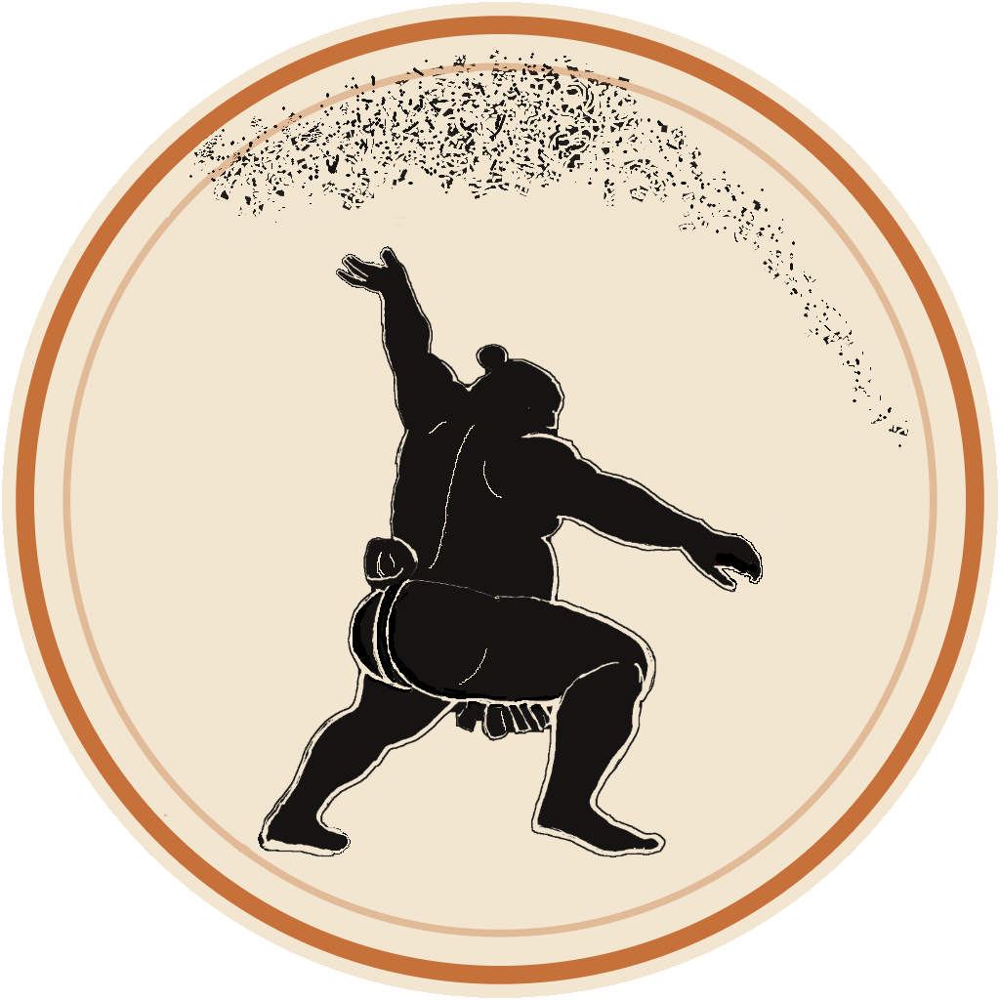

The crew's home for the banzuke, the bouts, and the bragging rights — spoiler-safe, so you set how far you've watched.
Any question about the sumo — "who's beaten a yokozuna this year?", "Onosato's toughest matchup?", "most kinboshi since 2025?" — answered straight from the data, and spoiler-safe to the day you've watched.
Forecast the full next banzuke. Jennie, MJ, Sherry — and the machine — scored head to head.
SoonSumo Kaboom cards, hand-colored and verified — chase a row of all-winning or all-losing records.
SoonEvery game's points pooled in one shared ledger — the crew's ranking per basho, per year, and all-time.